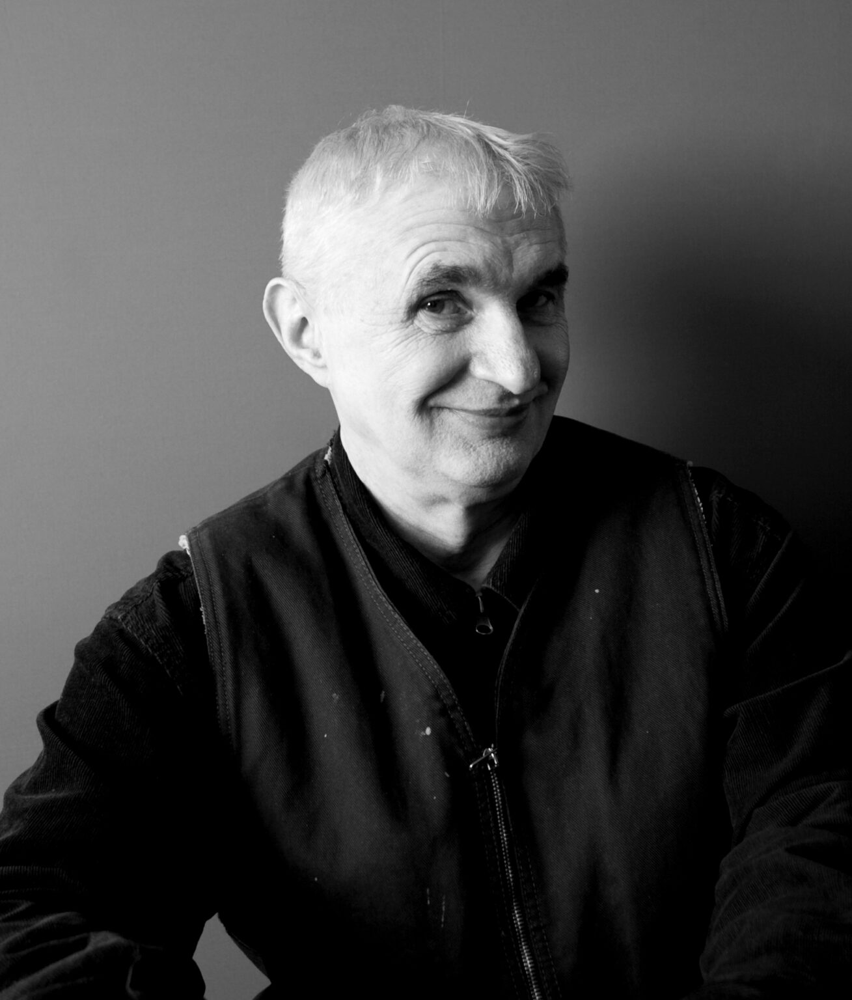
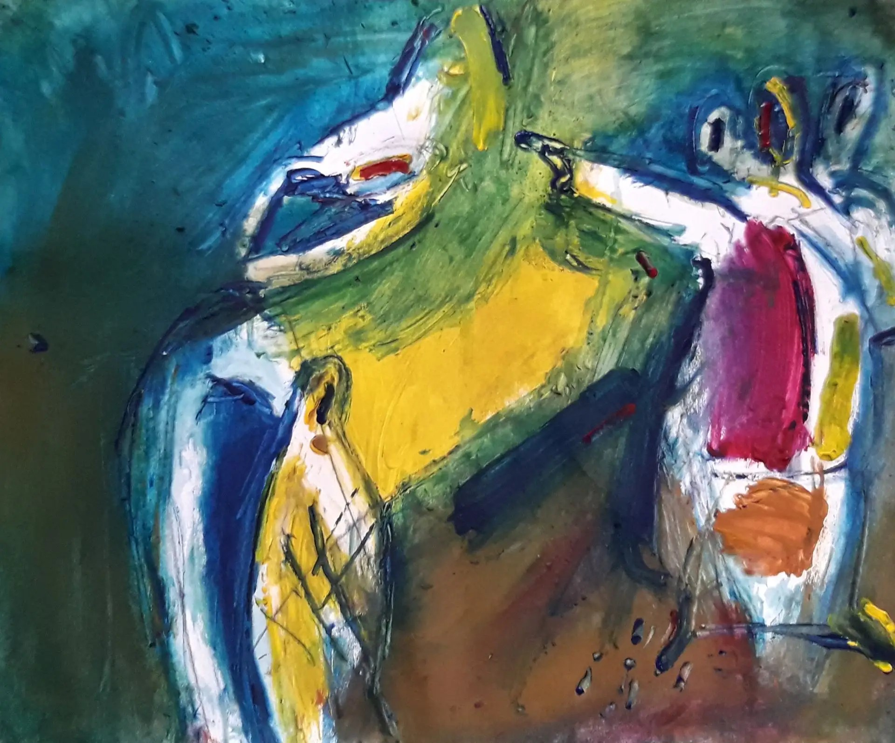
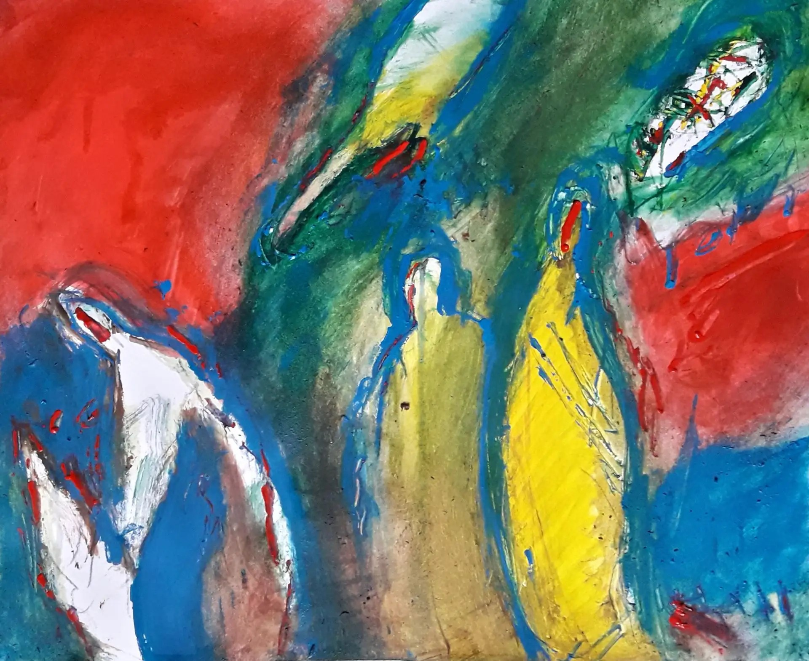
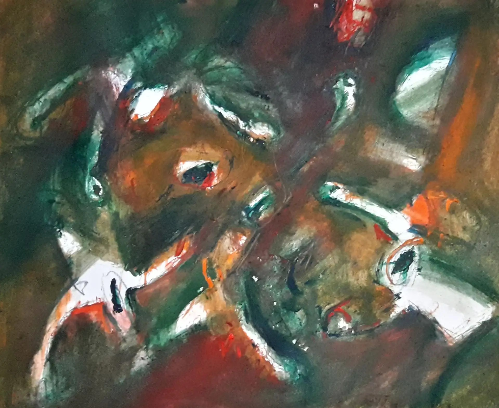
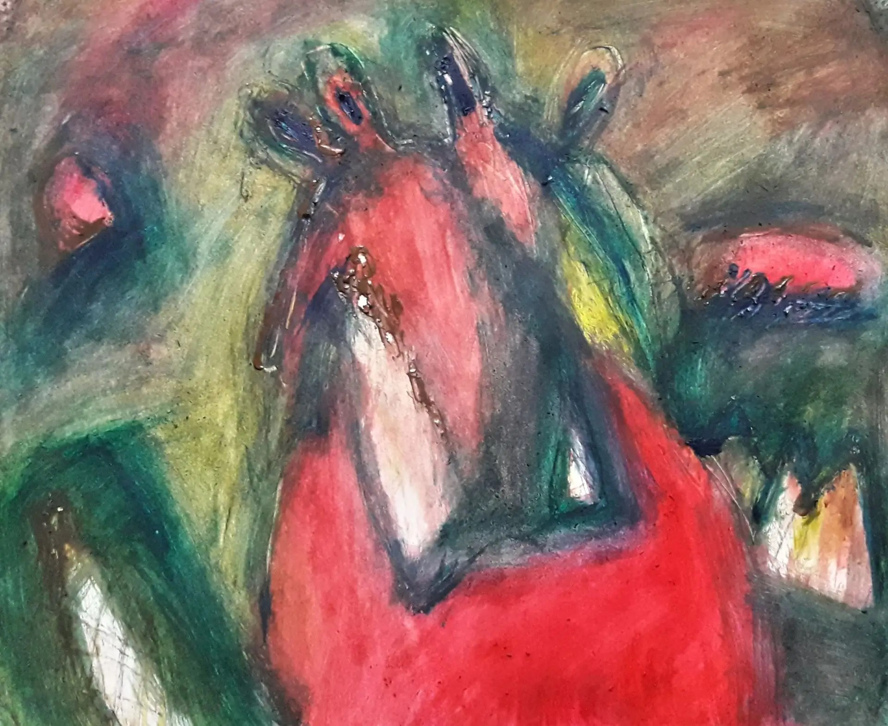
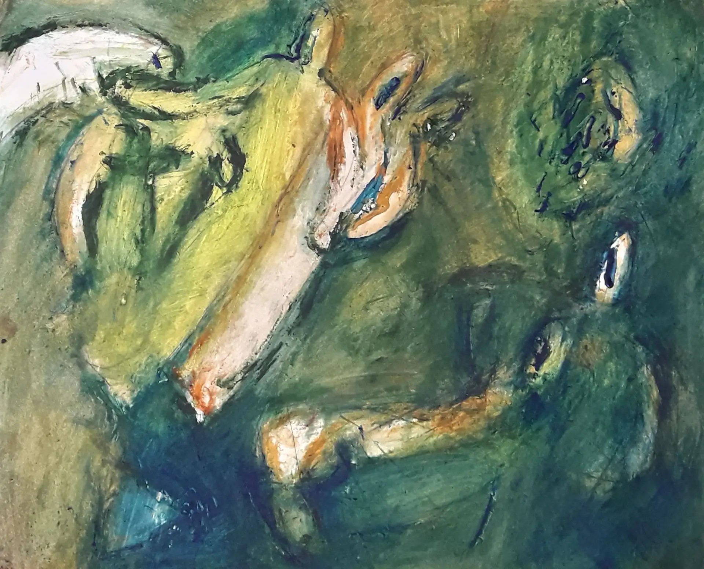
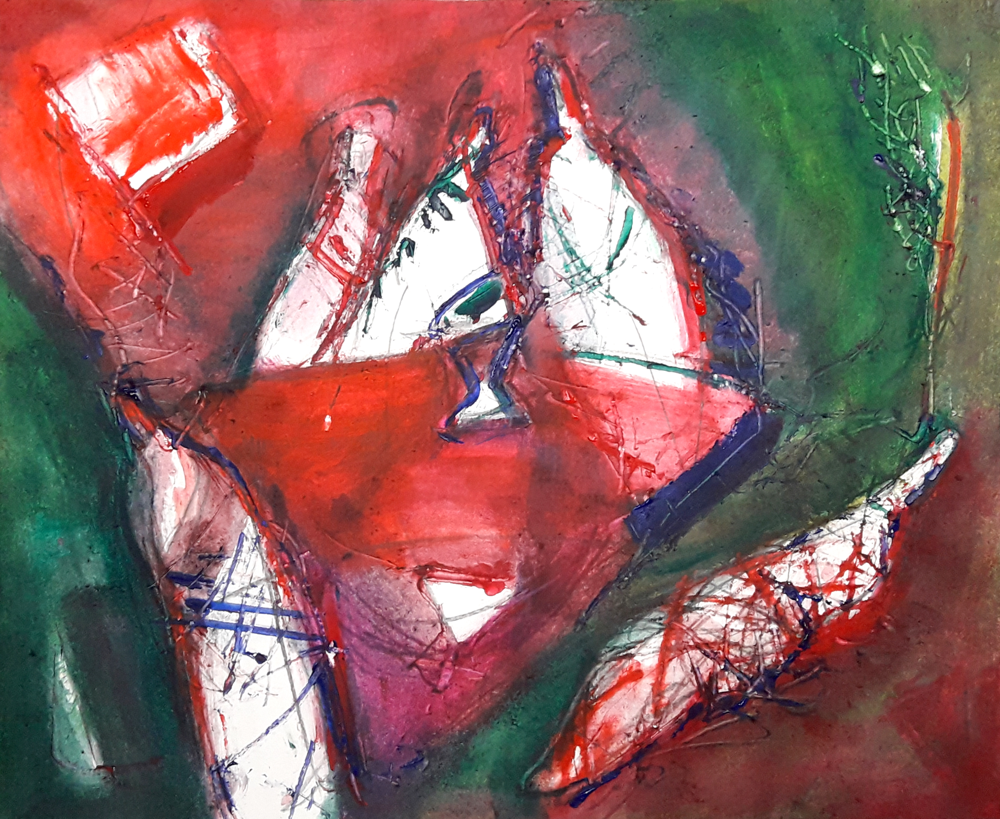
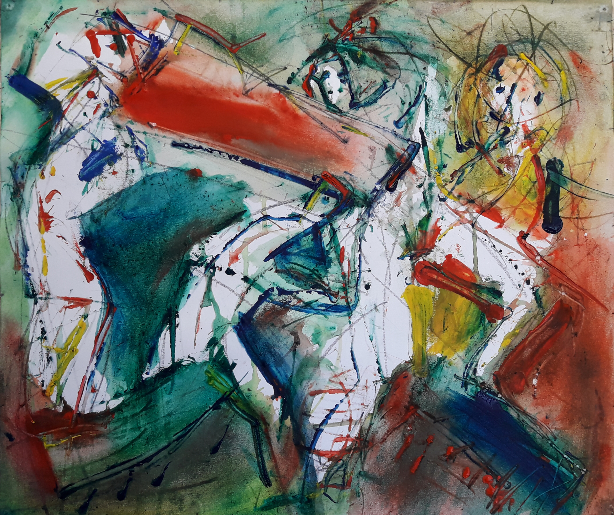

проект в разработке

Михаил Михайлович Якушин (1952–2025) — российский художник-график и живописец.
Художник-график и живописец, участник выставок в России и за рубежом.
Родился в Николо-Урюпино, служил в армии.
В 1977 году закончил Московское художественное училище памяти 1905 года. С конца 1980-х годов участвовал в профессиональных выставках Московского союза художников СССР, в 1989 году вступил в секцию станковой графики.
Художник принимал участие во множестве выставок в Москве и других городах СССР:
«Молодые художники в поездках по стране» (1979), «Москва предолимпийская» (1980), серии московских молодёжных выставок (1979–1985), выставках эстампа и монументального искусства. Его работы экспонировались за рубежом — в Праге и Берлине на международных экспозициях экслибриса. В 1983 году состоялась персональная выставка в редакции «Литературной газеты».
В 1990 году состоялась совместная выставка Михаила Якушина и Николая Короткова в Центральном Доме Художника (ЦДХ), которая включала станковую живопись, станковую графику и акварельную живопись.
Михаил Якушин создавал книжные иллюстрации, среди значимых изданий — иллюстрации к стихам Саши Чёрного «Что кому нравится», а также к научно-познавательным книгам: Ф. Углова, А. Ивина, Л. Москвичёва и др. В 1990-е годы вместе с супругой художником-модельером Людмилой Якушиной разрабатывал фирменный стиль и художественное оформление Дома моды.
В 2014 году состоялась семейная выставка «Чёрное и белое» в галерее «Листок».
В 2021 году в Доме художников на Кузнецком Мосту был показан совместный проект «Художник и Модель». В последние годы художник создал около трёх тысяч акварельных работ, став ярким представителем современного метода «Метамодернизм». Его произведения находятся в частных коллекциях в России, Германии, Франции, США, Японии и других странах.
«Михаил Якушин оставил большое творческое наследие и первой персональной выставкой в галерее на Арбате, мы хотим привлечь внимание профессионалов и заинтересованных лиц для продвижения его имени и творчества».






